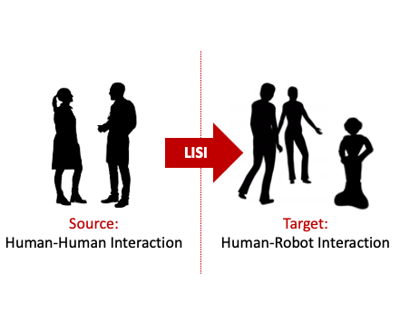

{{ page.title }}

EPSRC New Investigator Award
Dr Oya Celiktutan, Principal Investigator
Centre for Robotics · Research Department of Engineering · King's College London
|
Abstract
The main objective of the LISI project is to set the basis for the next generation of robots that will be able to learn how to act in concert with humans by watching human-human interaction videos. This objective will be achieved by (1) developing novel methods for learning the principles of human-human interaction autonomously from visual data and learning to imitate these principles via robots using the techniques of computer vision and machine learning, and (2) synergistically integrating these methods into the perception and control of real humanoid robots.
|